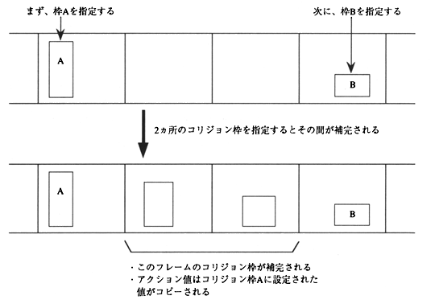

Return to previous page ｜ Return to menu ｜ Go to next page
-
Completion
After selecting “Completion” and specifying two collision frames in another frame, the collision frame in the frame between them is automatically complemented. At this time, the action value set for the previous collision frame is also copied.
The size and position of the collision frame to be complemented are the two specified collision frames at equal intervals. An image of completion is shown in Figure 2.15.

Figure 2.15 Image of complementation
Return to previous page ｜ Return to menu ｜ Go to next page